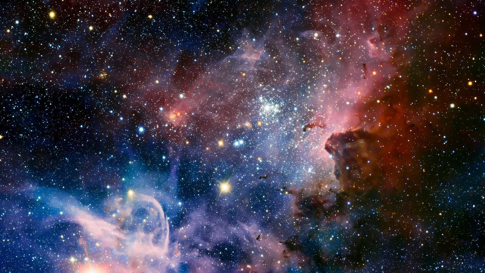

The Universe
Life is within this

The Earth
Where the life actually exists
Explore-Learn-Talk
About this gigantic beautiful and mysterious space
Life is within this
Where the life actually exists
About this gigantic beautiful and mysterious space
The secretive startup SpinLaunch, which aims to fling satellites into space without a traditional launch pad, has just secured its first launch contract. In a statement today (June 19), SpinLaunch announced that it has received a "launch prototype contract" from the U.S. Department of Defense under a deal arranged by the Defense Innovation Unit. The Long Beach, California-based company aims to launch its first test flights in early 2020 from Spaceport America in New Mexico.
In most maps of the solar system, you can expect to see the eight canonical planets (plus whatever Pluto is at the moment) trailing the fiery orange sun like polite little ducklings in a row. In biologist Eleanor Lutz's new map of the solar system, which shows the precise orbital paths of more than 18,000 near celestial objects, you'll be lucky if you can even find Mars.
NASA is set to launch an incredible new atomic clock into orbit on a Falcon Heavy tomorrow (June 24) in a technology demonstration mission that could transform the way humans explore space. The Deep Space Atomic Clock, developed by NASA's Jet Propulsion Laboratory, is a space-ready upgrade to the atomic clocks we use here on Earth and to the clocks that already fly on satellites like those that provide GPS.
Sriharikota is a barrier island off the Bay of Bengal coast located in the Nellore district of Andhra Pradesh, India. It houses the Satish Dhawan Space Centre, one of the two satellite launch centres in India (the other being the Thumba Equatorial Rocket Launching Station in Thiruvananthapuram). Indian Space Research Organisation (ISRO) launches satellites using multistage rockets such as the Polar Satellite Launch Vehicle and the Geosynchronous Satellite Launch Vehicle from Sriharikota.